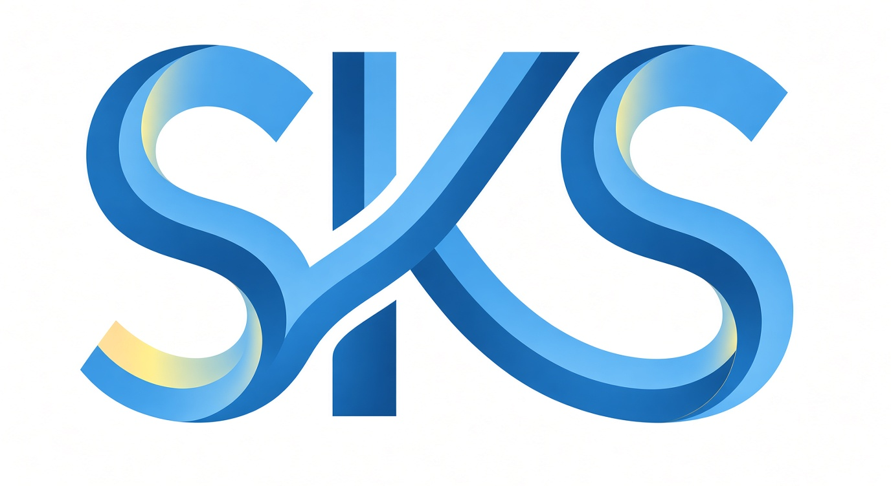

Menciptakan ruang pendampingan akademik terpadu yang terpercaya, transparan, dan dapat diakses dengan mudah oleh seluruh mahasiswa Universitas Airlangga
Tentang SKS
SKS (Satu Klik Solusi) adalah platform pendamping akademik yang dirancang khusus untuk mendukung kebutuhan pembelajaran mahasiswa di lingkungan Universitas Airlangga. SKS hadir sebagai solusi strategis dalam mengatasi tantangan akademik, khususnya keterbatasan referensi belajar yang presisi dan bimbingan yang selaras dengan mata kuliah program studi.
Melalui integrasi layanan marketplace katalog note dan program bimbingan, SKS berkomitmen untuk membangun ekosistem yang terstruktur, transparan, dan terpercaya.

VISI & MISI
▲ Pemerataan Akses: Menyediakan bimbingan berkualitas melalui ringkas yang 100% linear dengan mata kuliah program studi Universitas Airlangga
▲ Jaminan Kredibilitas: Menjaga mutu bimbingan melalui verifikasi resmi KHS tutor dan kreator dengan capaian nilai minimal A/AB
▲ Mendorong Kolaborasi Peer-to-Peer: Membangun wadah interaksi yang fleksibel antar mahasiswa
▲ Layanan yang Terjangkau: Menyediakan ekosistem pendampingan akademik berkualitas yang inklusif dan ramah di kantong mahasiswa.